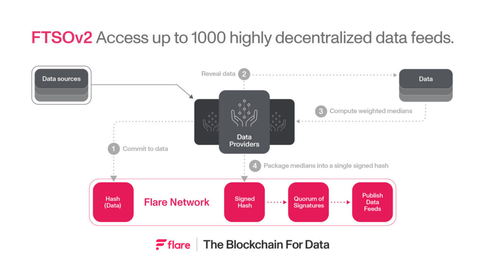
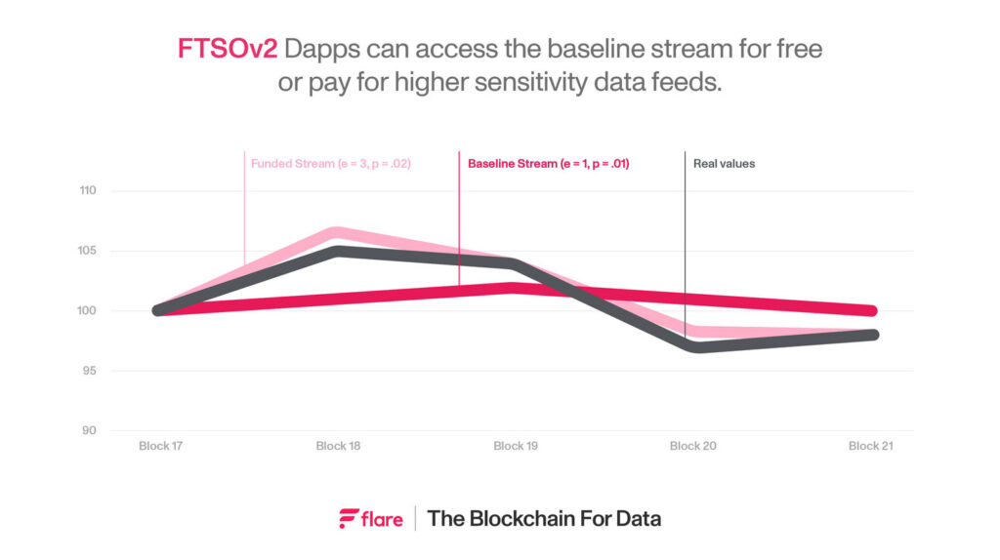

The FTSOv2 is an upgrade of the Flare Time Series Oracle, including more regular updates, better performance, a wider range of data feeds, and high frequency updates. It is a stepping stone to realize the vision of Flare as the blockchain for data.
In this blog post, we will present the benefits of the new protocol and summarize the technical optimizations that made it possible. For a more detailed review, our latest white paper expands on this summary, fleshing out the mechanics and benefits of the design of the FTSOv2.
The Blockchain for Data is expanding its scope
Flare’s upgraded oracle, FTSOv2, introduces a significant advancement in on-chain data access for businesses operating within decentralized finance (DeFi), such as lending or trading dapps. By enhancing data accessibility and reducing usage costs, Flare’s oracles are a marked improvement over existing oracle technologies, establishing a new benchmark for decentralization and affordability in data exchange.
Flare is focusing on fully decentralized oracles to support applications built both on Flare and other chains. By enshrining oracles into the Flare blockchain, they benefit from the inherent security afforded by full decentralization, which in turn addresses the critical need for reliable, decentralized data feeds in DeFi and the wider web3 space.
Having developed a robust foundation, Flare is now expanding its data capabilities to include a broader spectrum of assets, such as stocks and commodities, and lowering the latency by which these feeds can be delivered. This is in preparation for further advancements in connecting data across blockchains and between web2 and web3.
These initiatives aim to enhance security, reduce costs, and simplify development processes, aligning with the network’s goal of facilitating secure, efficient cross-chain data exchange.
Decentralizing Oracle Access
Oracles are a critical building block of DeFi, securing vast amounts of value by providing accurate, real time off-chain data to on-chain smart contracts. All major oracles depend on a limited number of data providers and the largest oracles effectively operate on a permissioned network. This undermines the core vision of decentralized finance – in extreme cases exposing users to catastrophic losses, and more gradual but equally as malignant losses through market manipulation.
The FTSOv2 is Flare’s solution to building an oracle capable of high-frequency updates, while supporting a wide range of data feeds and maintaining decentralization.
Unlike some solutions available on the market today, where a data feed may be secured with as few as 5 nodes, the FTSOv2 guarantees that each data feed will be secured by the entire network, consisting of 100 nodes. These guarantees make it significantly safer and easier for developers and users to rely on FTSOv2 price feeds, without having to understand specific idiosyncrasies of the feed in question.
Often, oracles follow a permissioned approach and only onboard large institutions and trading firms as data providers on their network, compromising network decentralization for the sake of latency. Flare makes no such compromises – the on-boarding process of the diverse set of data providers is fully permissionless, and is supported by open delegations by users of the Flare Network. Additionally, other oracles, perhaps seeing the potential of using a decentralized Proof of Stake (PoS) Layer 1 like Flare, are currently in the early stages of switching over to PoS. However, these networks have a low percentage of native tokens staked for oracle security as compared to Flare; around 7% compared to Flare’s 66%.
Upgrading the Flare Time Series Oracle
The current iteration of the Flare Time Series Oracle, FTSOv1, updates a collection of 18 price feeds every 3 minutes. The new iteration of the FTSO improves on this process by scaling out both the frequency of updates and number of available feeds. Additionally, two distinct kinds of updates are now supported:
- Anchor updates, the periodically updated FTSO data feeds that combine estimates from multiple providers as in the FTSOv1.
- Stream updates, a new feature that leverages a fast update technique to publish incremental updates to the data feeds in each block.
Anchor updates are supported by a series of improvements to the voting process, providing better performance without changing the key concepts of the process. The improvements have been designed to maintain the desirable features of the FTSO: decentralization, accuracy, and security. As in the original design, each data feed value is still aggregated from individual estimates from 100 data providers on the Flare Network. The modified incentive and capping structure stops providers from maliciously affecting the aggregated values whilst encouraging providers to determine accurate estimates.
The new stream values are formed from a sequence of incremental updates per block, providing access to updates at a faster rate with a simpler aggregation mechanism. The stream feed relies on a process known as fast updates, where rotating providers chosen by lot each submit incremental updates to the data. The size of these increments can be changed by community funding, so that stream updates function on demand: dapps and other users pay a fee to access increasingly accurate data feeds.
Both improvements to the anchor updates and the introduction of stream updates have been designed so as to not harm the gas consumption of the protocol, meaning that the FTSO is still sustainable and does not consume too much of the available gas throughput of the Flare Network.
In summary, the FTSOv2 improves on the previous iteration in three ways:
- Anchor updates are provided every 90 seconds, halving the latency between publishing data values.
- The number of supported valuations has increased dramatically, with over 50 data feeds initially supported and a design capable of scaling to 1000 feeds.
- Stream updates are provided in between anchor updates, allowing optional access to updates at a higher frequency, at a possible cost in accuracy.
Oracle Access on Flare at Scale
The overall flow of a round of the FTSO remains unchanged: 100 data providers estimate the value of each data feed, whose individual estimates are then aggregated using a weighted median algorithm into a set of finalized values. Again, the improved process does not consume unsustainable gas, even though it supports more data feeds and faster updates. So how do these low-cost improvements function? The secret lies in moving unwieldy computations off-chain, with only verification information published on-chain. In this way, the hard work necessary in performing the calculations is pushed onto the providers, minimizing on-chain computation. Providers then upload verification data to the chain, proving that the off-chain computations were performed correctly. Thus, a voting round of the FTSOv2 proceeds as follows:
- Each provider computes their estimate for each of the supported FTSO data feeds, and uploads to the chain a single hash committing to their individual estimates.
- Each provider reveals their list of estimates and uploads the information on-chain.
- Off-chain, providers compute the aggregate value for each feed in the voting round.
- Providers package the list of median values into a single hash, uploading this hash to the chain, together with a signature over the hash.
- Once enough signatures corresponding to the same hash are uploaded, this hash determines the final values for the data feeds for the round, which are now available for use in e.g. smart contracts.

From the flow diagram, we can see how the new FTSO design minimizes gas consumption: most costly computations have been offloaded and are the direct responsibility of the providers. Storage costs are minimized by having results of these computations uploaded to the chain in a compressed hashed form where possible. Between these two optimizations, the FTSOv2 redesign is able to support an increased speed and wider coverage without incurring unmanageable gas costs.
Weights and Caps: Balancing Decentralization and Accuracy
The FTSO takes inputs from 100 providers, and outputs values for each round based on aggregating these estimates into a weighted median value. For the purposes of the FTSO, the weight of a provider corresponds to the amount of wrapped FLR (WFLR) that it has accrued, either by the provider itself or delegated to the provider by other users of the Flare Network. The aggregated value for each feed is then a weighted median of provider estimates: estimates given by providers with higher weight have more impact on the aggregated price than those of smaller providers, as higher weight providers have a history of better quality data estimates.
However, in order to stop individual providers from having too much input into a round, and harming the decentralization of the protocol, we apply a cap of 2.5% on the maximum weight of an individual provider. Any provider whose weight exceeds this cap is considered to have 2.5% of the weight for the purposes of the median computation, with excess weight distributed across all providers. For the signing process, a combined weight of 50% or more of the provider weight is required for a result to be finalized.
Fast Updates: Low Latency Updates on Demand
As well as supporting updates to up to 1000 data feeds every 90 seconds, the FTSOv2 design supports a new feature called fast updates, an auxiliary data stream with a lightweight design that updates more regularly. The stream feed that operates on fast updates supports the same data feeds as the anchor FTSO feed, but updates them in a different manner – a continuously updating stream, rather than periodic valuations. Every block, a random selection of providers is chosen to give fast updates, with providers selected with probability proportional to their weight. Each selected provider then pushes an increment for each stream feed, representing a small change in its value; aggregating these increments determines the next stream value. The size of a single increment and number of updates are parameters that can be changed to reflect volatility of the underlying asset at a given time, either by governance or by community funding. In this way, a dapp or other users interested in more rapid data updates can fund the fast updates protocol to increase the fidelity of the stream feed.

The chart illustrates how a funded increase in the fast update parameters of expected number of updates per block (e) and precision of increments (p) can allow the stream values to track the volatile behavior of real values more closely than the default behavior would.
The key advantage of this mechanism is its speed, as updates can be provided essentially every block. However, the security and accuracy guarantees of the fast update stream are less robust than those of the anchor values, as the aggregation process is simpler. Thus, the stream updates are primarily aimed at applications where having up-to-the-moment information is crucial.
Rewarding for the FTSO
As with the FTSOv1, providers are rewarded for accurate estimates and active participation. Providers are rewarded in the following ways, with the size of the rewards relative to the weight of the provider and the importance of the process:
- Providers who give accurate submissions to the anchor data feeds are rewarded for submitting values close to the weighted median value – and as this is of primary importance, around 80% of the rewards for the anchor updates are set aside for good submissions
- The remaining rewards for the anchor updates are assigned to active participation in the signing and finalizing of FTSO rounds. This ensures that the system functions correctly and promptly.
- Providers who have submitted fast updates are given a share of stream accuracy rewards at the end of each 90 second window, as long as the stream feed aligns closely with the anchor value for that round.
- All participation in fast updates is rewarded to encourage initial investment in fast update infrastructure, regardless of the accuracy. These rewards may be removed later once the stream feed is more firmly established.
As well as rewards for providers, users who have delegated their WFLR to a provider are rewarded for delegating to successful providers. Each provider is assigned rewards relative to its weight, with a proportion of these rewards passed on to delegators relative to the fraction of provider weight that each delegation has provided, minus a percentage fee charged by providers for their services.
Conclusion
The deployment of FTSOv2 serves as an integral component of the network’s ambition to democratize data by rendering it more accessible, cost-effective, and decentralized. In this blog post, we have summarized the improvements in the v2 design of the FTSO that facilitate a wider range of data feeds, shorten the gap between updates, and maintain the FTSOs desirable security and decentralization features. The primary focus of the improvements is on moving computational burdens off-chain, so that gas consumption and latency are minimized. Additionally, we looked at the novel fast updates feature, which provides a secondary, stream feed as a companion to the anchor feed, supporting users with a particular need for rapidly updating data feeds.
These enhancements not only improve access to live, high-assurance data for decentralized finance platforms but also establish the groundwork for a comprehensive framework wherein data can be seamlessly exchanged across diverse blockchain architectures. In essence, the FTSOv2 embodies Flare’s dedication to facilitating a symbiotic integration between conventional and blockchain-based data ecosystems, thereby enabling businesses to use the transformative potential of blockchain technology for innovation, operational optimization, and expansion.